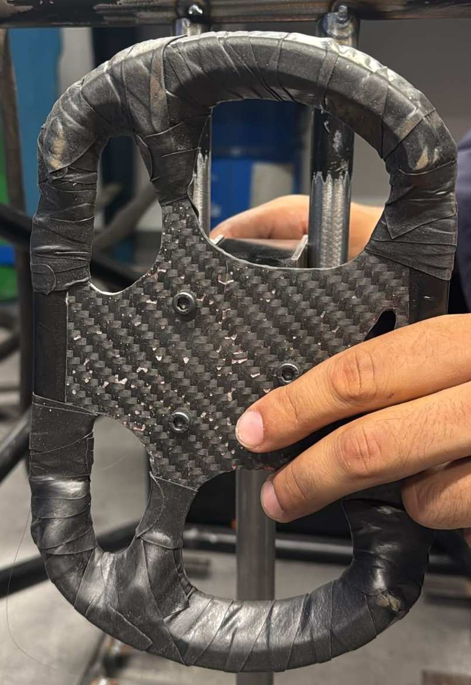
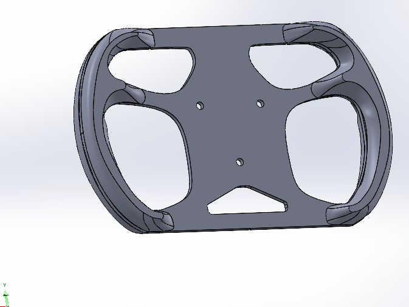
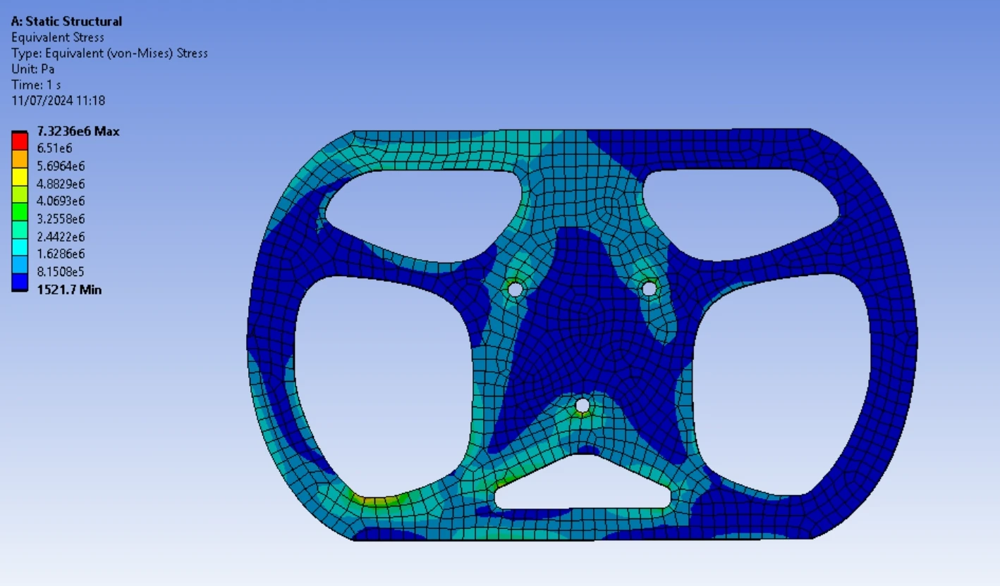
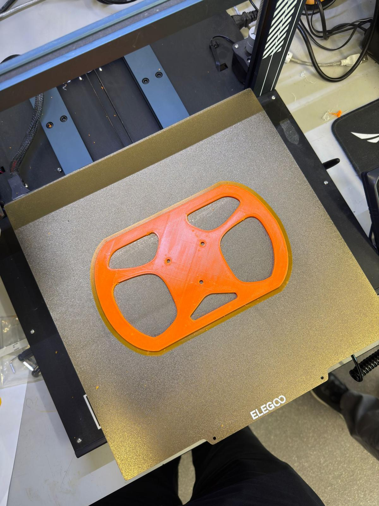
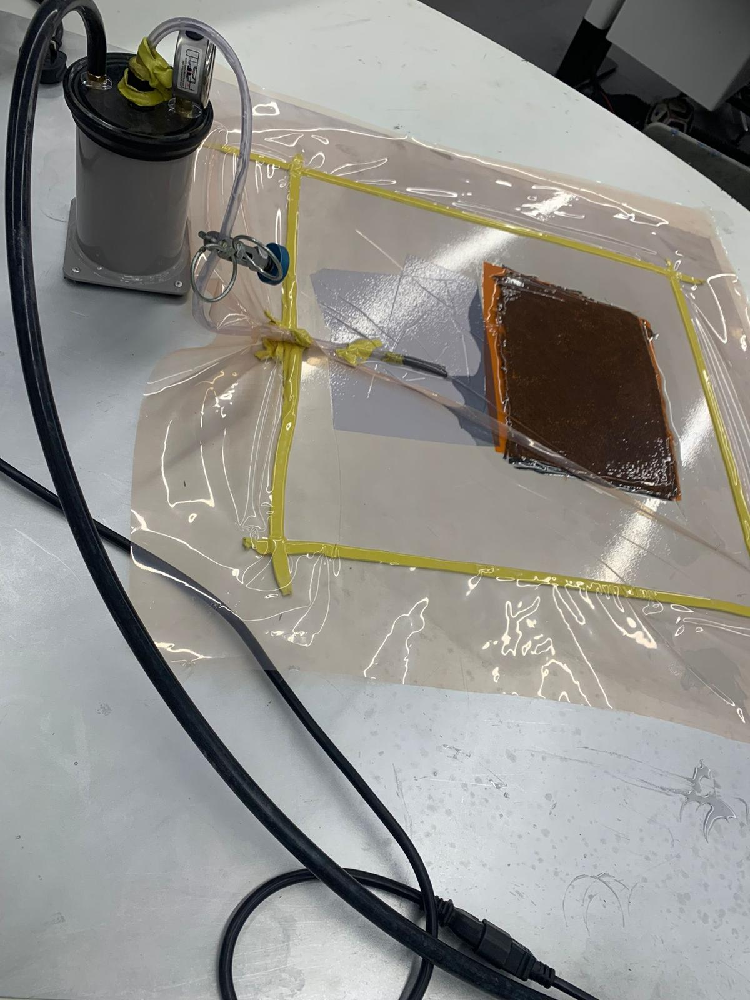
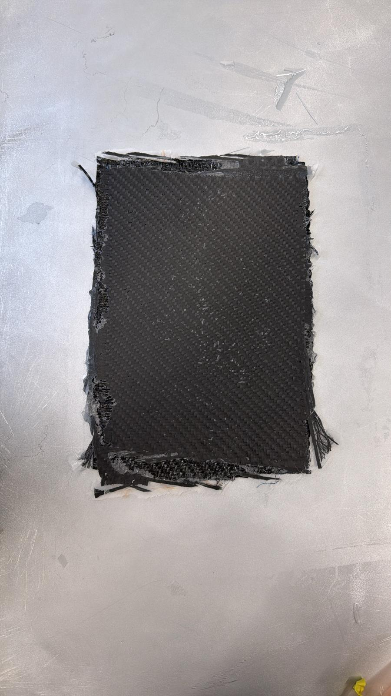
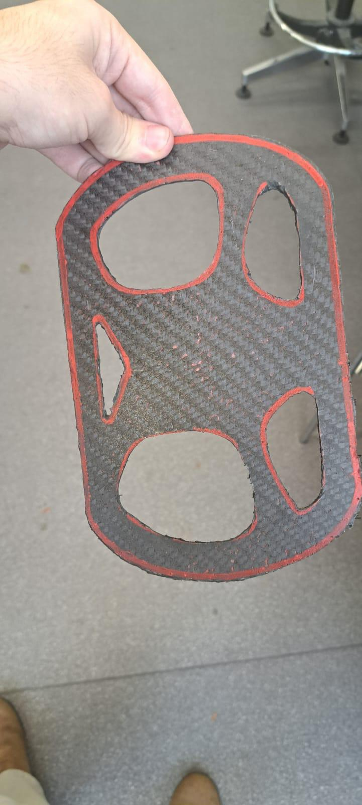

Steering Wheel – QMFS IC24 to IC26
A carbon fibre steering wheel designed for the IC24 car, carried into IC25 unchanged, and built for IC26 using resin infusion.

Project Overview
The steering wheel is the driver's only interface to the steering system. Its design is determined by structural requirements, rule compliance, ergonomics, and packaging. I was responsible for the design, the structural analysis, and the material selection.
- IC24: Designed from scratch, replacing a previous wheel that had to be scaled down to clear the front hoop.
- IC25: Carried over unchanged, as the driver line-up and steering system were identical to the previous concept.
- IC26: Geometry retained, but the padding was revised for a slightly different driver preference and the part was rebuilt using resin infusion rather than wet layup, as the composites department now had the process available.
The design is a flat carbon fibre base plate with separate 3D-printed grips bonded to the rim, mounted to a quick release on three bolts. Component mass is about 280–300 g for the wheel and padding, with the quick release adding about 260–300 g depending on fasteners.
Requirements and Rules
The wheel is constrained more by the rulebook and the packaging than by applied load. The following rules were considered:
- T2.6.6: Positioned no more than 250 mm rearward of the front hoop.
- T2.6.7: Continuous near-circular or near-oval perimeter. Straight sections are allowed, concave sections are not.
- T2.6.8: In any angular position, no higher than the top of the front hoop, including the driver's hand inside a racing glove.
- T4.1.3: Removable so the cockpit opening template can be fitted.
The previous wheel was scaled down, reducing the steering torque, and a manufacturing mistake left its quick release mounted off centre. The new wheel ensured the mounting was central, while providing a longer base to improve both torque and ergonomics.

Design and Material Selection
Two choices were considered. Firstly, a machined aluminium plate with printed handles, which is simple to make and stiff but heavy. Secondly, a carbon fibre layup base plate with printed handles and foam padding, lighter and easier to shape around the driver's grip. Scored on a weighted matrix across reliability, efficiency, cost, weight and integration, the composite won 55 to 43.
Material selection was run as its own weighted comparison against density, cost, fatigue resistance, manufacturability and fracture toughness. 2×2 twill 3k carbon fibre scored 70 against 54 for 5251 aluminium H22. Aluminium won on cost and manufacturability, while carbon won on density, fatigue and fracture toughness.
The failure mode was determined in a design FMEA. Fracture of the base plate leading to loss of steering control: severity 10, occurrence 3, detection 1, giving an RPN of 30. This result was followed by analysis rather than redesign.
Structural Analysis
A static structural analysis was run in Ansys with the three mounting holes fixed and an 11.287 Nm moment applied at the rim, reproducing the load path from the driver's hands through the plate and into the quick release.
Peak von Mises stress was 7.32 MPa, concentrated around the cutout fillets and the lower mounting hole. Deflection was of the order of 10 µm.
The model used an isotropic material rather than a laminate definition. Von Mises is not a valid failure criterion for a composite, and predicted deflection depends on modulus, so the deflection figure should be read as indicative only. It was judged sufficient here because the peak stress sits about two orders of magnitude below any possible laminate strength. The wheel is not strength-critical; its design is driven by ergonomics and packaging. The FEA located stress concentrations and confirmed the cutouts do not create a critical section.

Manufacturing
For IC26 the wheel was made by resin infusion rather than the wet layup used on IC24. Infusion gives a more consistent fibre-to-resin ratio and a better surface finish, and it removes most of the hand-rolling variability that made the earlier part inconsistent. The IC24 wheel used ten plies of 210 gsm laid wet, while the IC26 part uses three plies of 650 gsm at 0/90, ±45, 0/90.
The panel was laid up flat on a 600 × 600 × 1.5 mm aluminium sheet, sanded through P40 to P320 and sealed with four coats of chemical release agent before fabric was applied.


The laminate stack contains peel ply, then knitted flow mesh to speed the in-plane resin flow, with a folded paper strip at the outlet to slow the flow there and stop resin reaching the catch pot before the panel is full. The bag is sealed and leak tested for 15 minutes before any resin is mixed. Resin is a slow-hardener epoxy system at 3:1, roughly 195 g of resin to 65 g of hardener, cured for 24 hours before demoulding with plastic wedges.
The cured panel is then marked from the printed pattern and handsawn to rough shape. The final profile is cut with a Dremel and cutting disc, the grip openings are drilled and opened out, and every edge is deburred through P40, P240 and P320. Grips are printed in PETG, bonded to the rim and wrapped using double-sided tape (also known as layup sealant tape) to give the driver a soft cushion. Duct tape is applied over the sealant tape to keep the texture consistent and not sticky.


I worked on the layup and infusion alongside the Deputy Head of Composites. As Head of Engineering, my composites experience was limited, and the process walkthrough above was written as a teaching document for new department members.
Limitations
- No composite FEA: The analysis used an isotropic material model, so it locates stress concentrations but does not predict composite failure.
- Load case: The 11.287 Nm applied moment comes from a driver torque calculation and not from measurement.
- No physical test: The wheel was validated by analysis, prototype fit and driver feedback. A physical torque test was planned but not carried out.
Future Work
- Laminate analysis: Model the laminate ply by ply with a composite failure criterion rather than von Mises, and use it to check whether the layup can be reduced below three plies.
- Steering torque: Measure the torque input from the driver, or physically test prototypes with the assumed load case.
- Adjustability: Depending on the vehicle and driver line-up, replaceable grips can be integrated to keep using the same base.